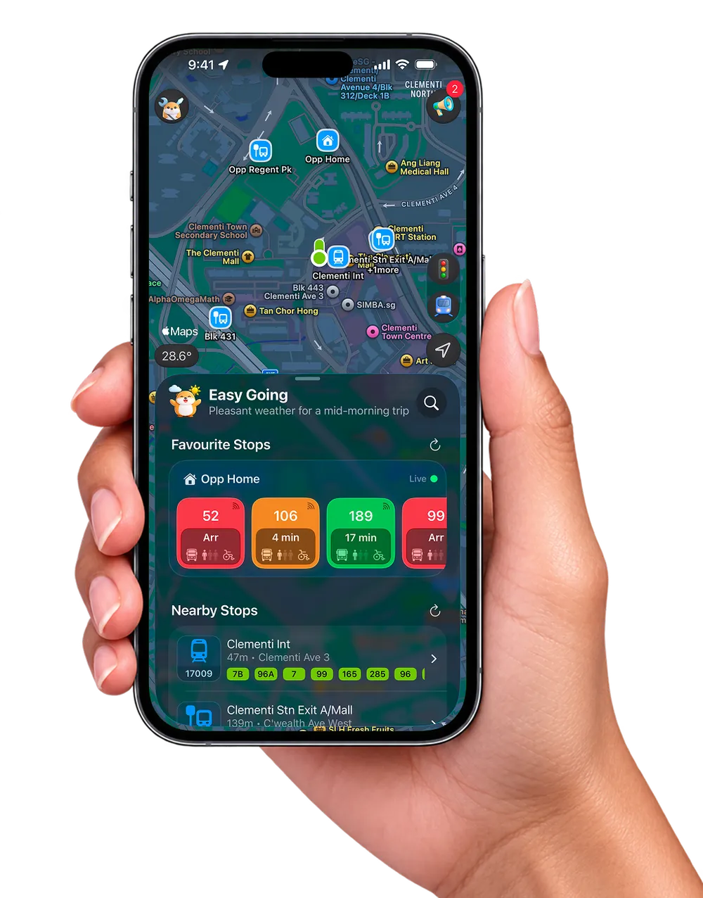
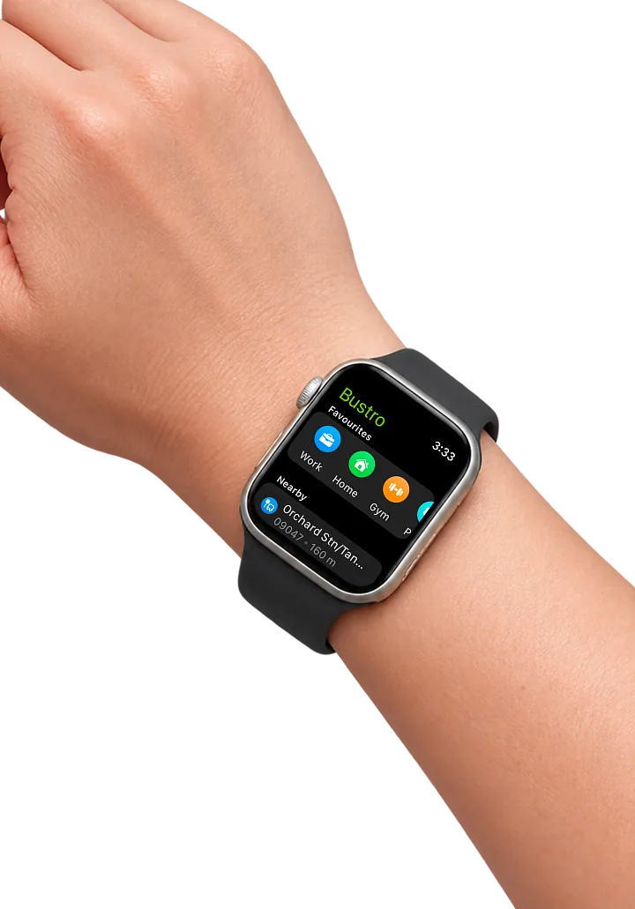
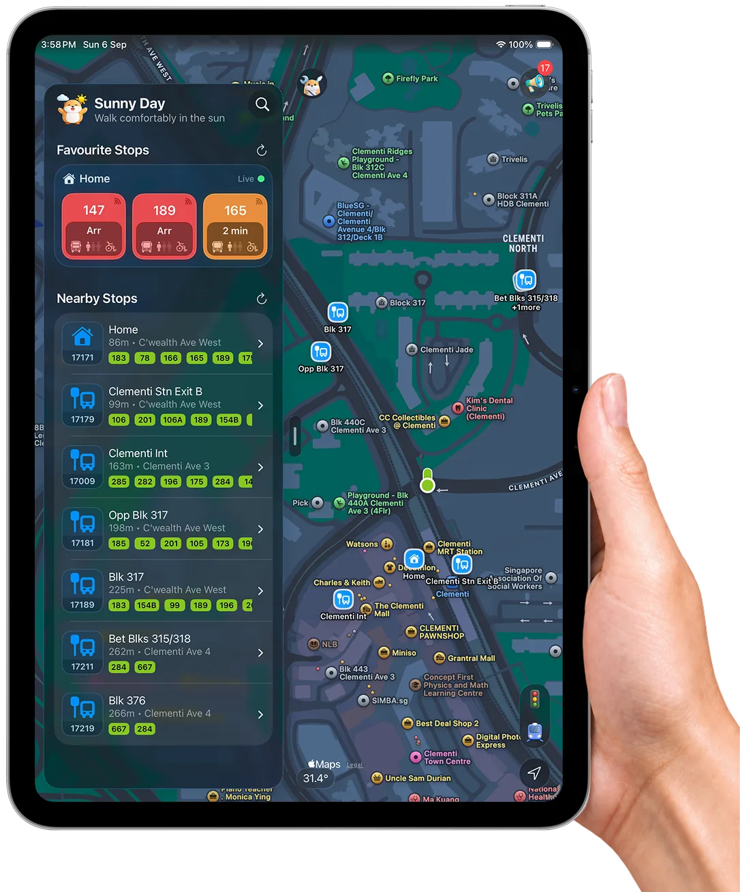

Never miss
your bus or stop
again
Live arrivals for every Singapore stop, a reminder before it is time to alight, and your journey counting down on the Lock Screen. Weather, MRT and LTA traffic alerts come along for the ride.
Your next bus, on your wrist. A complication on the watch face keeps your usual stop one glance away.
Your stops in a side panel, the map live beside them. Slide it away for the whole island.
Help in Bahasa Melayu · தமிழ் · 简体中文
Average rating on the App Store
-
Best Bus App
Beautiful updated app 👍🏼
L41N4D · Singapore
-
Makes Catching the Bus So Easy
I use this app almost daily during work. It really helps when I’m deciding when to leave the office to catch my bus.
PriyankaChandima · Singapore
-
Reliable and Convenient for Singapore Commuters
Bustro is a must-have app for anyone relying on public transport in Singapore.
k rajitha · Singapore
-
Excellent Resource
Simple layout. Not inundated with ads or bugs. Timely.
BAS2181 · United States


